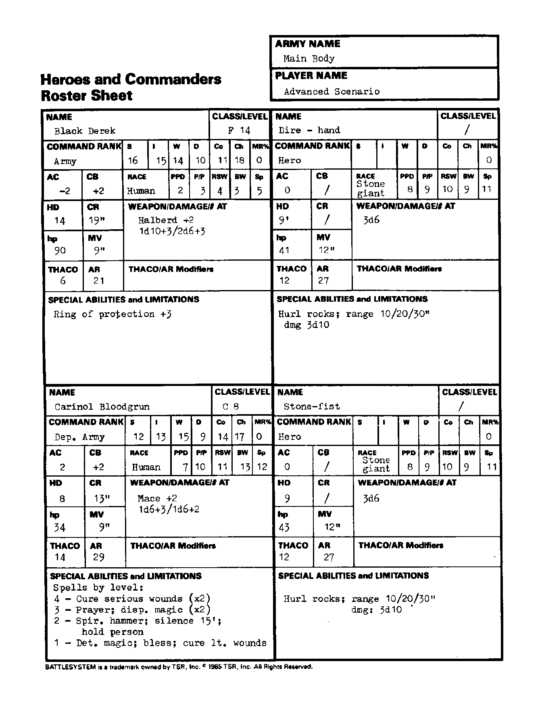

主力军 Main Body：英雄与指挥官
能力值顺序：力量／智力／感知／敏捷／体质／魅力。五项豁免依次为麻痹·毒素·死亡魔法／石化·变形／法杖·法棒·魔杖／吐息／法术。移动与指挥半径以桌面英寸计；“—”表示原卡空白或不适用。武器两种伤害分别针对 S/M 与 L 目标；特殊多次攻击另行注明。
黑德里克 Black Derek
| 项目 | 数值 |
|---|---|
| 职业／等级 | 战士 14 |
| 指挥职级 | 军队 |
| 六项能力值 | 16/15/14/10/11/18 |
| 种族 | 人类 |
| 魔法抗性 MR | 0% |
| 护甲等级 AC | -2 |
| 指挥加值 CB | 2 |
| 五项豁免 | 2/3/4/3/5 |
| 生命骰 HD | 14 |
| 指挥半径 CR | 19 |
| 生命值 hp | 90 |
| 移动率 MV | 9 |
| THAC0 | 6 |
| 攻击等级 AR | 21 |
| 武器／伤害／攻击次数 | 戟 +2；1d10+3／2d6+3 |
| 特殊能力、限制与准备法术 | 防护戒指 +3。 |
凶手 Dire-hand
| 项目 | 数值 |
|---|---|
| 职业／等级 | — |
| 指挥职级 | 英雄 |
| 六项能力值 | — |
| 种族 | 石巨人 |
| 魔法抗性 MR | 0% |
| 护甲等级 AC | 0 |
| 指挥加值 CB | — |
| 五项豁免 | 8/9/10/9/11 |
| 生命骰 HD | 9 |
| 指挥半径 CR | — |
| 生命值 hp | 41 |
| 移动率 MV | 12 |
| THAC0 | 12 |
| 攻击等级 AR | 27 |
| 武器／伤害／攻击次数 | 3d6 |
| 特殊能力、限制与准备法术 | 投石，射程 10/20/30 英寸，伤害 3d10。 |
卡里诺尔·血咆 Carinol Bloodgrun
| 项目 | 数值 |
|---|---|
| 职业／等级 | 牧师 8 |
| 指挥职级 | 军队副指挥官 |
| 六项能力值 | 12/13/15/9/14/17 |
| 种族 | 人类 |
| 魔法抗性 MR | 0% |
| 护甲等级 AC | 2 |
| 指挥加值 CB | 2 |
| 五项豁免 | 7/10/11/13/12 |
| 生命骰 HD | 8 |
| 指挥半径 CR | 13 |
| 生命值 hp | 34 |
| 移动率 MV | 9 |
| THAC0 | 14 |
| 攻击等级 AR | 29 |
| 武器／伤害／攻击次数 | 硬头锤 +2；1d6+3／1d6+2 |
| 特殊能力、限制与准备法术 | 四级：治疗重伤×2；三级：祈祷、解除魔法×2；二级：灵锤、十五英尺沉默、人类定身；一级：侦测魔法、祝福、治疗轻伤。 |
石拳 Stone-fist
| 项目 | 数值 |
|---|---|
| 职业／等级 | — |
| 指挥职级 | 英雄 |
| 六项能力值 | — |
| 种族 | 石巨人 |
| 魔法抗性 MR | 0% |
| 护甲等级 AC | 0 |
| 指挥加值 CB | — |
| 五项豁免 | 8/9/10/9/11 |
| 生命骰 HD | 9 |
| 指挥半径 CR | — |
| 生命值 hp | 43 |
| 移动率 MV | 12 |
| THAC0 | 12 |
| 攻击等级 AR | 27 |
| 武器／伤害／攻击次数 | 3d6 |
| 特殊能力、限制与准备法术 | 投石，射程 10/20/30 英寸，伤害 3d10。 |
兵力卡原图
